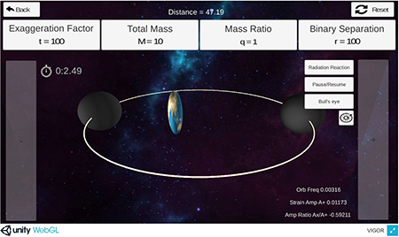

| VIGOR Virtual Interaction with Gravitational waves to Observe Relativity | |
VIGOR is a real-time simulation of binary black holes and gravitational waves created at UTD. To run this html5 version of VIGOR, please use Firefox. (Click here to download Firefox). You do not need to download Unity. Click here to start VIGOR. Enjoy! |
 |
| Parameters | Exaggeration Factor – scales the GW amplitude for easy visualization
Total Mass – the sum of the BH masses
Mass Ratio – the mass of the smaller BH divided by the mass of the bigger BH
Binary Separation – the distance between the two BBHs |
Options & displays |
Back – takes back to intro page
Distance – the distance between the Earth and BBH center of mass
Reset – rests simulation to initial values
Radiation Reaction – BBHs spiral inwards due to loss of energy to GWs
Pause-Resume – pause/unpause the simulation Bull’s eye – displays target to measure stretching and squeezing
Pinwheel – rests the stopwatch |
| Navigations | a & z keys – change the viewing angle from edge on to above/below orbital plane
left & right arrows – rotate view about the axis of BBH orbit
up & down arrows – change the distance of the Earth from BBH center of mass |
| VIGOR team members & contributors | Midori Kitagawa, Ph.D. |